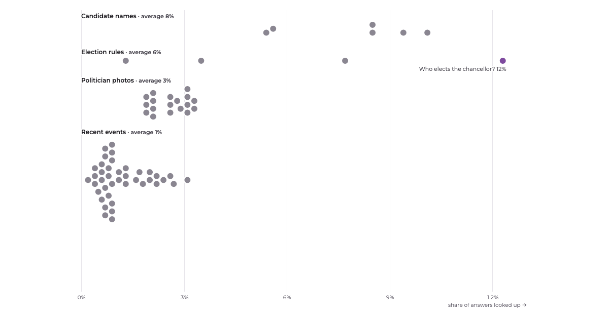
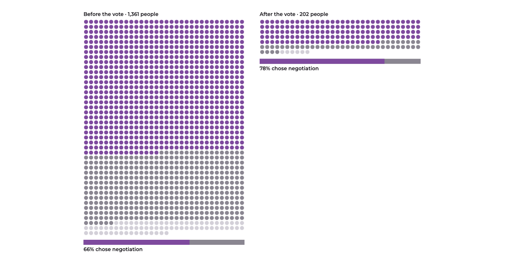
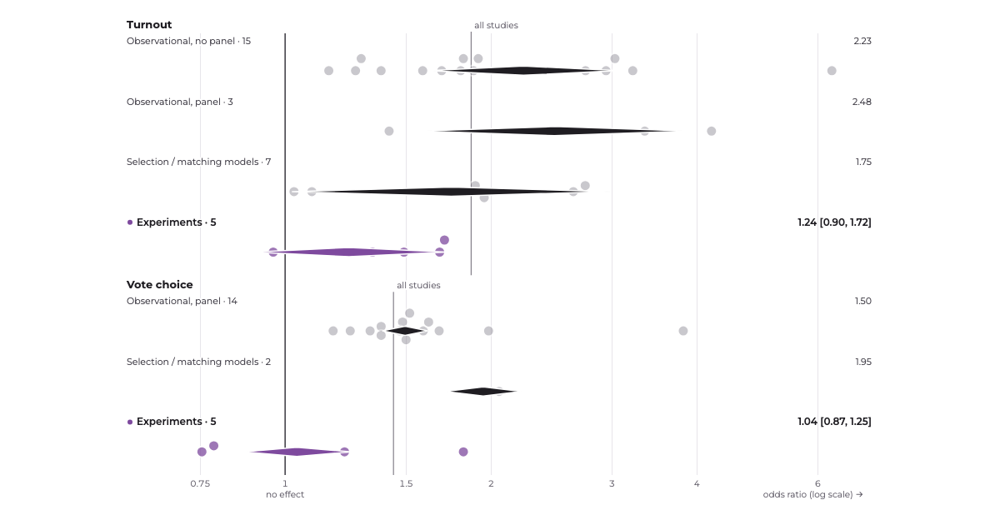

Research Stories
Papers live in PDFs only a few get to read. These stories are for everyone else.
-
“Googling” the answers to online surveys

Who’s cheating on your survey? What browsing data reveal about “googling” the answers
Online surveys can’t stop people from looking up the answers to knowledge questions. By linking a survey to its respondents’ browsing data, collected with their consent, we caught it happening, question by question. Here is how common it is, who does it, and whether it changes what we learn.
Based on: Munzert et al. (2024), Political Science Research and Methods
-
Colombia’s surprise No to peace

“What now?” How the unexpected “No” referendum victory changed Colombians’ views on a negotiated end to the conflict
In 2016, Colombians narrowly rejected the deal to end the war with the FARC. A national survey happened to be in the field when it happened. Comparing people interviewed before and after the vote shows what the shock did to views on war and peace.
Based on: Sebastian Ramirez-Ruiz (2024), Research & Politics
-
Do voting advice apps work?

Millions turn to voting advice apps. Do they change anything?
At a time when the internet gets much of the blame for what is going wrong with democracy, voting advice applications stand out. We pooled every study we could find on what they actually do. The answer depends on how you look.
Based on: Simon Munzert & Sebastian Ramirez-Ruiz (2021), Political Communication